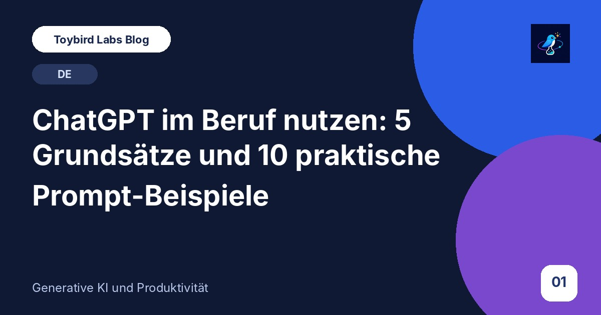
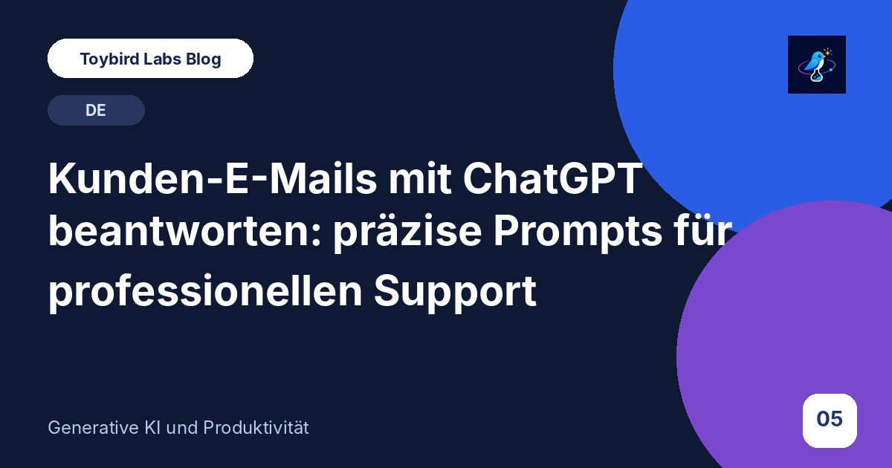
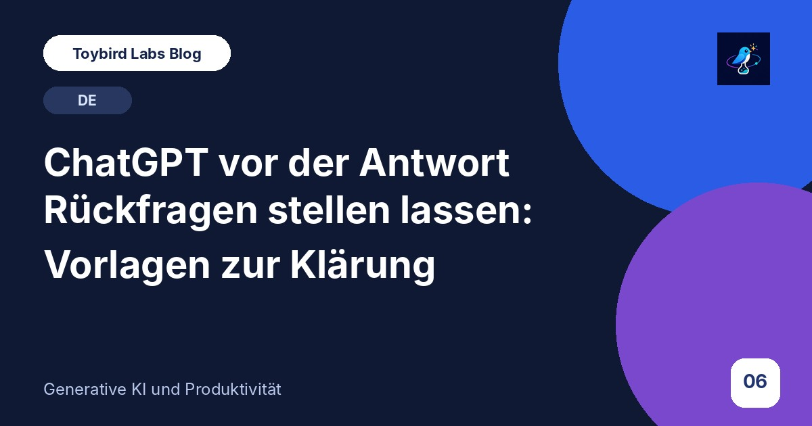
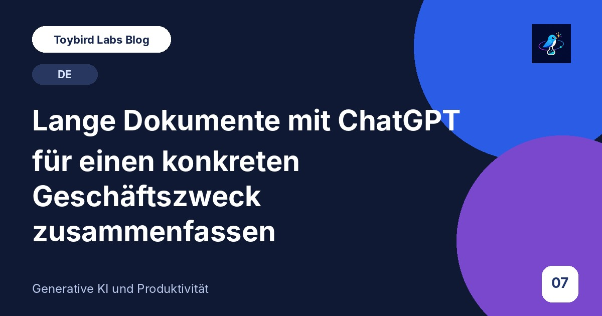
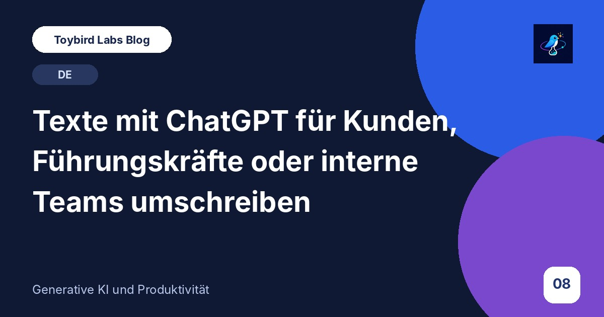
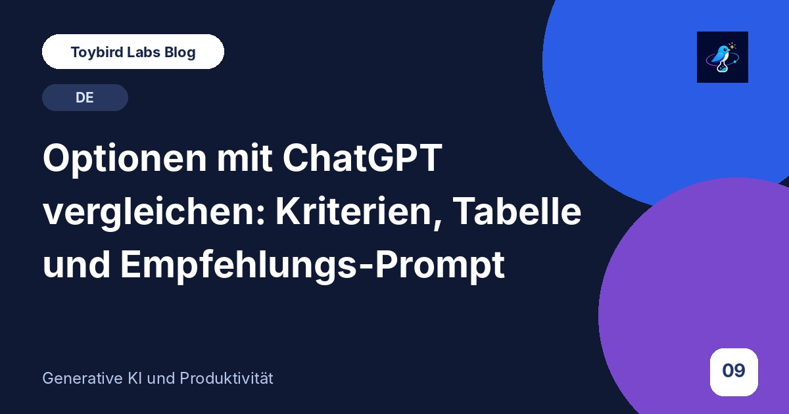

Toybird Labs Blog
Praktische Ideen für besseres Arbeiten und Lernen
Konkrete Anleitungen für generative KI im Berufsalltag und praktische Tipps zu den Apps von Toybird Labs.
Artikel
Hier beginnen

ChatGPT im Beruf nutzen: 5 Grundsätze und 10 praktische Prompt-Beispiele
Lernen Sie, ChatGPT im Arbeitsalltag klarer anzuleiten – mit fünf Grundsätzen und zehn Beispielen für E-Mails, Meetings, Zusammenfassungen, Vergleiche, Recherchen und Verkaufsgespräche.
Praxisanleitungen nach Aufgabe

Mit ChatGPT eine höfliche Absage schreiben: Vorlage und Beispiele für Geschäftspartner
Mit ChatGPT eine Kunden- oder Partneranfrage klar und respektvoll ablehnen. Mit Vorlage, Beispielen zu Termin, Rabatt und Leistungsumfang sowie Prüfliste.

Mit ChatGPT aus Besprechungsnotizen Aufgaben erstellen: Verantwortliche, Termine und offene Punkte
Mit ChatGPT Entscheidungen, Aufgaben, Verantwortliche, Termine und offene Punkte aus Notizen extrahieren – ohne fehlende Angaben zu erfinden.

Warum ChatGPT an der Aufgabe vorbeischreibt und wie Folgeprompts die Antwort korrigieren
Erfahren Sie, warum ChatGPT zu lang, zu allgemein, für die falsche Zielgruppe oder mit vermischten Fakten antwortet – und wie gezielte Folgeprompts helfen.

Kunden-E-Mails mit ChatGPT beantworten: präzise Prompts für professionellen Support
Mit ChatGPT Kundenantworten aus Originalnachricht, bestätigten Fakten, offenen Punkten und nächsten Schritten erstellen. Mit wiederverwendbarer Vorlage.

ChatGPT vor der Antwort Rückfragen stellen lassen: Vorlagen zur Klärung
Wenn noch nicht klar ist, welche Angaben benötigt werden, lassen Sie ChatGPT vor der Antwort Rückfragen stellen. Mit Vorlagen für eine Frage nach der anderen, maximal drei und Auswahloptionen.

Lange Dokumente mit ChatGPT für einen konkreten Geschäftszweck zusammenfassen
Berichte, Richtlinien oder Angebote mit ChatGPT nach Leser, Entscheidung, Pflichtbereichen und zu erhaltenden Fakten zusammenfassen. Mit Vorlage.

Texte mit ChatGPT für Kunden, Führungskräfte oder interne Teams umschreiben
Dieselben Informationen mit ChatGPT für Kunden, Führungskräfte, Teams oder Einsteiger anpassen. Mit Vorlage für Zielgruppe, Ton, Länge und zu erhaltende Fakten.

Optionen mit ChatGPT vergleichen: Kriterien, Tabelle und Empfehlungs-Prompt
Produkte, Anbieter, Tarife oder Angebote mit ChatGPT vergleichen – mit Kriterien, Prioritäten, fehlenden Daten und klaren Empfehlungsregeln.

Verkaufsgespräche mit ChatGPT üben: Kundenrolle und Feedback-Prompt
ChatGPT als realistischen Kunden für Verkaufstraining nutzen. Rolle, Phase, Bedenken, Frage-für-Frage-Regel und Feedback-Kriterien mit einer Vorlage festlegen.